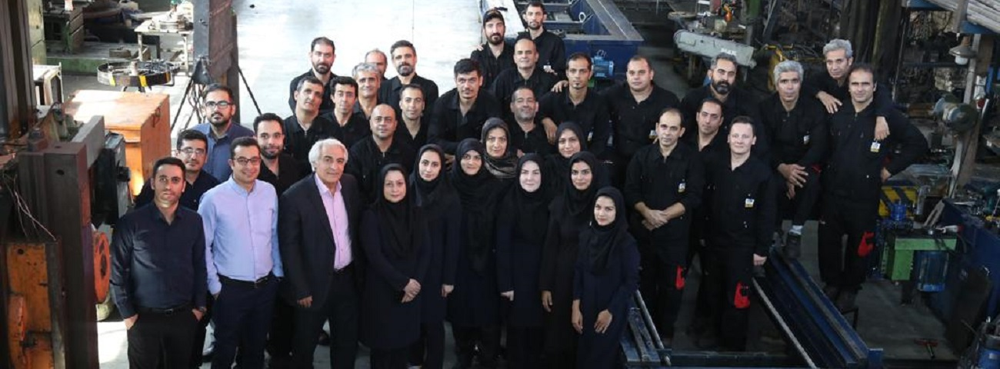

تاریخچه شرکت ماشین ابزار مکث
شرکت ماشین ابزار مکث فعالیت خود را از سال 1367 و با طراحی و ساخت مگنتهای الکتریکی که برای اولین بار در ایران تولید می شد آغاز کرده و بدون استفاده از تکنولوژی یا کمک شرکتهای خارجی موفق به تولید و عرضه انواع مگنتهای الکتریکی شد . از سال 1371 با طراحی و ساخت ماشین آلات مخصوص تولیدی ، دامنه فعالیت خود را به صنعت خودرو ( ساخت قطعات خودرو ) گسترش داد . در سال 1382 و با فراخوان شرکت توکا فولاد برای طرح توسعه ریخته گری فولاد مبارکه اصفهان فعالیت خود را در ساخت ماشین ابزارهای مخصوص سیار واجرای ماشینکاری در محل بدون جابجائی قطعه یا دستگاه شروع کرده ودر ادامه دامنه فعالیت خود را به سایر شرکتهای فولادی – نیروگاه ها – معادن – چوب و کاغذ و …گسترش داد . تکنولوژی این رشته کاری نیز کاملاً بومی بوده و مهندسین ومتخصصان این شرکت بدون کمک گرفتن از شرکتهای خارجی و تنها با اتکا به تخصص و تجربه خود موفق به بنیان گذاری این رشته کاری در ایران شده است . این شرکت دانش بنیان ، هم اکنون با بیش از 34 سال سابقه فعالیت در حوزه ماشین سازی و ساخت مگنتهای الکتریکی و 19 سال فعالیت در زمینه ماشینکاری در محل ، با انجام بیش از 1000 مورد عملیات ماشینکاری در محل در داخل و خارج ازکشور وبا داشتن حدودا 80 دستگاه ماشین ابزار مخصوص سیار ، اولین و بزرگترین شرکت ماشینکاری در محل در منطقه خاور میانه و یکی از 15 شرکت برتر ماشینکاری در محل در جهان می باشد